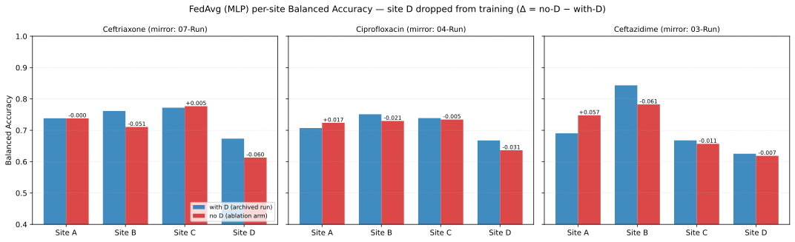
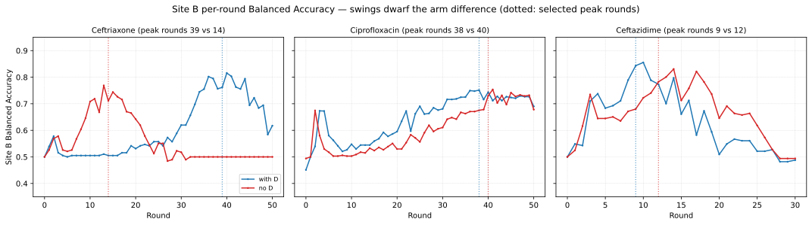
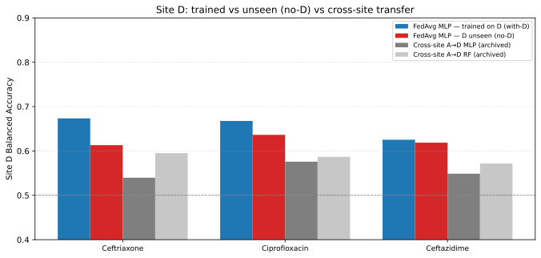
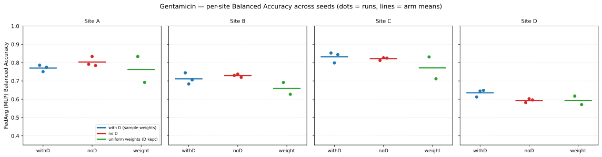
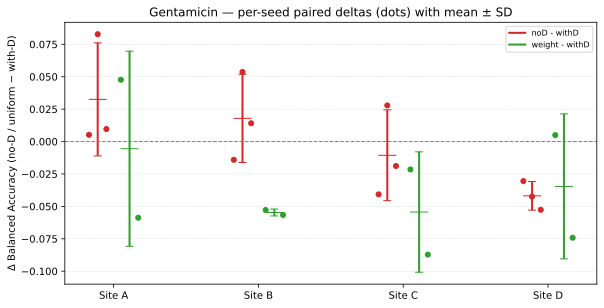

Site-D Ablation — Training without DRIAMS-D
Do the federated models get dragged down by DRIAMS-D? Site D is the largest site (~39 % of the pooled spectra) and has the weakest per-site Balanced Accuracy in five of the six drugs (see Per-Drug Results). This page reports the leave-D-out pilot (three drugs) plus a seed-replicated follow-up on Gentamicin that quantifies the noise floor and tests whether D’s aggregation weight is the mechanism.
Result in one line: removing D does not improve the other sites — aggregate performance is essentially unchanged, and every per-site effect except D’s own sits within a ±0.01–0.04 noise floor (measured with seed replicates on Gentamicin). D itself is the site that loses most from exclusion, and its aggregation weight is not the mechanism. D is not dragging the federation down; its per-site weakness is a transfer cost, not D poisoning the model.
Design
Drug |
no-D arm |
with-D mirror |
Rounds |
|---|---|---|---|
Ceftriaxone |
|
|
50 |
Ciprofloxacin |
|
|
50 |
Ceftazidime |
|
|
30 |
The no-D arm trains three clients (A/B/C) with the same seed (42), per-site species-stratified 90/10 splits, hyperparameters, thresholds and rounds as the with-D run; Centralized MLP/RF pool A/B/C only. FedProx is skipped (unstable at tuned μ in the with-D runs) and the cross-site arm is not re-run. Site D stays in evaluation as an unseen site. Strategy set: Centralized MLP/RF, FedAvg MLP, FedLR, FedRF.
Because the splits are computed per site with a fixed seed, the A/B/C (and D) test sets are identical to the archived runs — every per-site Δ below is a paired comparison on the same test data. Client-local training (data, seeds, hyperparameters) is unchanged; the no-D arm differs only in which clients participate in aggregation.
Results
Does D hurt the other sites?
Drug |
ΔA |
ΔB |
ΔC |
ΔD (unseen) |
|---|---|---|---|---|
Ceftriaxone |
±0.000 |
−0.051 |
+0.005 |
−0.060 |
Ciprofloxacin |
+0.017 |
−0.021 |
−0.004 |
−0.031 |
Ceftazidime |
+0.058 |
−0.061 |
−0.011 |
−0.007 |
Mean |
+0.025 |
−0.044 |
−0.004 |
−0.033 |


FedAvg (MLP) per-site Balanced Accuracy, with-D run versus no-D arm (Δ annotated at each run’s selected peak round). A edges up in two of three drugs and C is flat; B’s point estimates fall in all three drugs, but that pattern is not robust (see below).
Robustness: peak vs final round
The per-site numbers above are taken at each run’s peak round (highest All-site Balanced Accuracy, the 08 convention). That selection is itself round-sensitive — the Ceftriaxone with-D FedAvg peaks at round 39, the no-D arm at round 14 — so the comparison is repeated at the final round of each run:
Drug |
ΔA |
ΔB |
ΔC |
ΔD (unseen) |
ΔAll |
|---|---|---|---|---|---|
Ceftriaxone |
−0.003 |
−0.117 |
−0.009 |
−0.087 |
−0.023 |
Ciprofloxacin |
+0.020 |
−0.012 |
−0.019 |
−0.024 |
−0.001 |
Ceftazidime |
+0.012 |
+0.006 |
+0.010 |
−0.028 |
−0.002 |
Mean |
+0.010 |
−0.041 |
−0.006 |
−0.046 |
−0.009 |
Two things become clear. First, D is the only site with a stable sign: the unseen model is behind the trained one in all six drug × round comparisons. Second, B’s direction is not stable — it flips to +0.006 for Ceftazidime, and its largest effect (Ceftriaxone, −0.117) comes with the smallest test set. Site B holds only 94–199 test spectra, and its round-to-round swings (±0.15) dwarf every arm difference:


Site B per-round Balanced Accuracy for both arms (dotted lines: each arm’s selected peak round). The apparent arm difference is within the training noise of this small site.
An exploratory species-mix check (cosine similarity of the per-site species shares) hints at why B might feel D’s absence: of the three drugs, only Ceftriaxone has B’s composition closest to D’s (B↔D 0.89, versus B↔A 0.67 and B↔C 0.85); for Ciprofloxacin and Ceftazidime the closest site is A. The Gentamicin follow-up below settles this question: B’s decline was noise.
Site D as an unseen site (evaluated but never trained on)
“Unseen” here means site D appears in every evaluation round of the no-D arm but never contributes to training, so its scores measure how well the federated model transfers to a hospital site it has never learned from.
Drug |
FedAvg (trained on D) |
FedAvg (D unseen) |
D AUC (no-D) |
Cross-site MLP |
Cross-site RF |
|---|---|---|---|---|---|
Ceftriaxone |
0.673 |
0.613 |
0.642 |
0.540 |
0.595 |
Ciprofloxacin |
0.668 |
0.636 |
0.666 |
0.576 |
0.587 |
Ceftazidime |
0.625 |
0.619 |
0.648 |
0.549 |
0.572 |


Site D when it is trained, when it is only evaluated (no-D arm), and under the archived cross-site baselines (A→D). Training with D is ahead of the unseen model at both selection rules (by 0.01–0.09); the comparison with the cross-site baseline is round-dependent — above it at the selected peak round in all three drugs, mixed at the final round.
Secondary strategies (Centralized MLP/RF, FedLR, FedRF)
Method |
ΔA |
ΔB |
ΔC |
ΔD |
|---|---|---|---|---|
Centralized MLP (pooled A/B/C) |
+0.023 |
−0.042 |
+0.042 |
+0.013 |
Centralized RF (pooled A/B/C) |
−0.022 |
−0.034 |
−0.032 |
−0.038 |
FedAvg (MLP) |
+0.025 |
−0.044 |
−0.004 |
−0.033 |
FedLR |
+0.019 |
+0.017 |
+0.014 |
−0.038 |
FedRF (trees) |
−0.039 |
−0.038 |
−0.048 |
−0.074 |
FedLR is mildly positive on A/B/C without D (B +0.017), the clearest counter-pattern to FedAvg MLP; it also loses the most on D (−0.038).
Centralized MLP is heterogeneous: Ciprofloxacin improves substantially (B +0.143, C +0.129, D +0.083), while Ceftriaxone B collapses (−0.187). Three single-seed drugs are not enough to call this a trend.
Centralized RF and FedRF decline nearly everywhere. For FedRF this is partly mechanical: the no-D ensemble grows with 3 clients instead of 4 (200 × 3 vs 200 × 4 trees per round), so its drop is not evidence about D.
All values here use the peak-round convention; the same selection sensitivity applies, so read the means as descriptive.
Follow-up: seed noise and weight control (Gentamicin)
The pilot is single-seed, so its deltas cannot be separated from run-to-run
noise, and the no-D arm changes two things at once — D’s data and its share
of the FedAvg aggregation. Both questions are addressed on a fourth
drug, Gentamicin (mirror 01-Run, 40 rounds), with all runs under one code
path:
Arm |
Clients |
Aggregation weights |
Seeds |
|---|---|---|---|
|
A/B/C/D |
sample-proportional (Flower default) |
42, 43, 44 |
|
A/B/C |
sample-proportional |
42, 43, 44 |
|
A/B/C/D |
uniform (every client equal) |
42, 43 |
The weight arm keeps D’s data but cancels its weight dominance: on
Gentamicin, D contributes ≈ 48 % of the training spectra (A 14 %, B 12 %,
C 26 % after downsampling), so uniform weights cut D’s share to 25 % and
roughly double B’s and C’s. Uniform weighting is implemented by returning a
constant num_examples from each MLP/LR client — the value Flower’s
FedAvg uses as the aggregation weight — and each run logs its round-1
weights ([1, 1, 1, 1] in the weight arm) as evidence the intervention
worked.
Noise floor. Per-site Balanced Accuracy across seeds:
Arm |
A |
B |
C |
D |
|---|---|---|---|---|
|
0.770 ± 0.018 |
0.711 ± 0.031 |
0.832 ± 0.029 |
0.635 ± 0.020 |
|
0.803 ± 0.027 |
0.729 ± 0.009 |
0.821 ± 0.008 |
0.593 ± 0.011 |
|
0.763 ± 0.100 |
0.659 ± 0.046 |
0.771 ± 0.085 |
0.594 ± 0.033 |


Per-site Balanced Accuracy across seeds (dots = runs, lines = arm means).
Paired per-site deltas (each no-D seed against the same-seed with-D run):
Contrast |
ΔA |
ΔB |
ΔC |
ΔD |
|---|---|---|---|---|
no-D − with-D |
+0.033 ± 0.044 |
+0.018 ± 0.034 |
−0.011 ± 0.035 |
−0.042 ± 0.011 |
uniform − with-D |
−0.006 ± 0.075 |
−0.055 ± 0.003 |
−0.054 ± 0.046 |
−0.035 ± 0.056 |


Per-seed paired deltas (dots) with mean ± SD, against the zero line.
What the follow-up shows.
The pilot’s small deltas are at the noise scale. Paired-delta SDs on Gentamicin are ±0.011 (D) to ±0.044 (A), and within-arm SDs reach 0.031, so the pilot’s per-site deltas of ≈ 0.02–0.06 cannot be resolved with a single seed.
B’s decline does not replicate. Without D, B is slightly up on Gentamicin (+0.018 ± 0.034): the pilot’s “B falls in all three drugs” was seed noise.
D’s benefit from participation replicates tightly (−0.042 ± 0.011, negative in all three seed pairs). This is the one per-site effect that survives both repetition and the noise floor.
D’s weight share is not the mechanism. Uniform weights do not improve any site: B drops consistently (−0.055 ± 0.003), C drops (−0.054), A is unchanged within a large spread (±0.075), and one of the two uniform runs collapsed overall (All-site BalAcc 0.630 vs 0.72–0.76 in every other run). Taking weight away from D destabilizes rather than helps.
Controls validate the intervention.
uniform − withDis exactly 0.000 for Centralized MLP/RF and FedRF (weights never reach those methods), and FedLR moves by ≤ 0.02 — the flag only affected the MLP and LR aggregation, as intended.
One model-class exception: the pooled RF improves without D on all four sites (ΔB +0.094 ± 0.011, ΔC +0.063 ± 0.008, ΔA +0.034, ΔD +0.021). Unlike the MLP, pooled tree models on Gentamicin appear to be hurt by D’s data — with a single drug this is a hypothesis, not a conclusion.
Reading
No evidence that D hurts the federation. If D’s client updates were degrading the global model, removing them should lift A/B/C. Instead aggregate performance on the shared test pool is unchanged (mean ΔAll ≈ −0.01), and the Gentamicin follow-up puts the per-site noise floor at ±0.01–0.04 — most pilot deltas sit inside it. The pooled (Centralized) arm agrees on A and C.
D benefits from participation. Excluding D costs D under both selection rules (trained ahead by 0.02–0.09), and the Gentamicin replicates confirm it tightly (−0.042 ± 0.011). Unseen, D stays in the cross-site baseline’s range (above it at the selected peak round in all three drugs, mixed at the final round).
B’s decline was noise. On Gentamicin, B is slightly up without D, and the weight-controlled arm shows that rebalancing away from D makes B worse, not better. There is no mechanism by which D’s weight share should be reduced.
This matches the UMAP Diagnostics conclusion: site D is not an isolated geometric island, and its weakness in per-site metrics reflects cross-site transfer difficulty — not a site that should be dropped from a federation.
Caveats
Single seed per arm (pilot). The Gentamicin follow-up quantifies the run-to-run noise: paired-delta SDs of ±0.011–0.044, within which most of the pilot’s per-site deltas sit.
The weight arm has 2 seeds and one unstable run. Its direction (no improvement) is consistent, but its magnitudes are indicative only.
Test-set sizes differ per site (A 469–810, B 94–199, C 276–377, D 662–982 spectra in the pilot): one spectrum moves B’s Balanced Accuracy by ≈0.01, so B’s deltas are a handful of spectra.
Peak-round selection. Per-site values follow the 08 convention (each run’s best All-site round), but the arms can peak at different rounds (Ceftriaxone FedAvg: r39 vs r14). The robustness table gives the final-round view, and the follow-up shows the effect is within seed noise.
Weight shift. FedAvg aggregates clients proportional to sample count; the no-D arm therefore tests “D’s presence and its weight” jointly. The follow-up’s uniform-weight arm separates the two: the weight share is not the driver.
Thresholds and hyperparameters were reused from the with-D runs (worst-site-optimal with D present). This is deliberate — it isolates the training effect — but threshold-dependent Balanced Accuracy could shift with A/B/C-only tuning.
FedRF is not an equal comparison in the no-D arm: fewer clients means a smaller global ensemble for the same rounds.
Drug coverage. The pilot covers three of six drugs; Gentamicin is the fourth via the follow-up. The positive Ciprofloxacin centralized deltas and negative Ceftriaxone ones show the heterogeneity; treat means as descriptive only.
Files and Notebooks
Site-D-Ablation/{Drug}/federated_noD.ipynb— the no-D run for each pilot drug, generated fromDrugs/{Drug}/federated.ipynb(TRAIN_SITES = ["A","B","C"], archived tuning loaded verbatim, checkpointing disabled,AllABCmetric added). SeeSite-D-Ablation/README.md.Site-D-Ablation/compare_noD.ipynb— builds the pilot comparison tables (peak-round and final-round), the transfer table, and the pilot figures (Site-D-Ablation/comparison_results/, local-only).Site-D-Ablation/Gentamicin/— the follow-up templates (federated_withD.ipynb,federated_noD.ipynb,federated_weight.ipynb) and their seeded runs underruns/(results-only, local);compare_followup.ipynbbuilds the noise-floor and weight-control tables and figures.Executed copies are archived as
results/notebook.ipynbinside each run folder (local-only).